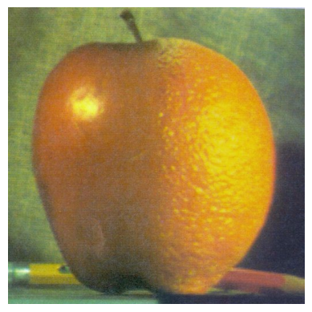
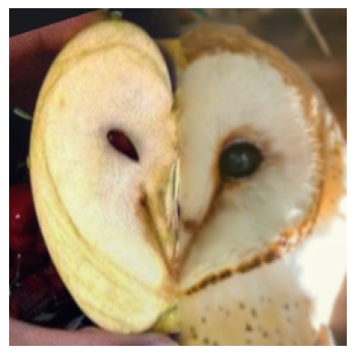
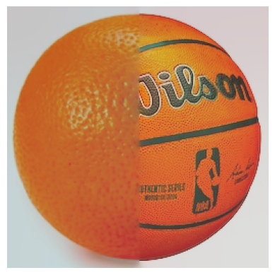
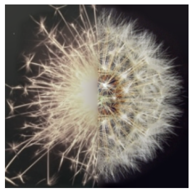

CSC 476/676 Homework 6: Fourier Transform and Pyramid Image Blending
Problem 1: Plot both continuous and discrete signals of the function
I created a range from 0 to 0.1 (because the function oscillates very tightly) and take 1000 points to simulate a continuous graph. I then just generated the signal and plotted it:
t = np.linspace(0, 0.1, 1000) # i used 1000 points
# 2. Generate the signal
t_continuous = 325 * np.sin(2 * np.pi * 50 * t)
# 3. Plot the function
plt.figure(figsize=(8, 4))
plt.plot(t, t_continuous)
plt.title('Continuous signal')
plt.ylabel('x(t)')
plt.legend()
plt.grid(True)
plt.show()
For the discrete signal, I sampled at a period of 1/1000 to avoid aliasing, sampling from 0 to 0.1 again.
Ts = 1 / 1000 #period I'm sampling, since I'm doing from 0 to .1
# discrete-time indices
n = np.arange(0, 0.1, Ts)#so we're sampling from 0 to 0.1 seconds
# discrete signal x[n]
x_discrete = 325 * np.sin(2 * np.pi * 50 * n)
# Plot
plt.figure(figsize=(8, 4))
plt.stem(n, x_discrete, basefmt='k') #had to look up how to make it look nice
plt.title('Discrete Signal')
plt.ylabel('x[n]')
plt.grid(True)
plt.show()
For the second equation, to get the discrete signals I sample by 1/1000 again and have this as my dt (change in t). I then just create a range from 0 to 51 and plot the graph taking these samples:
dt = 1/1000 #sample spacing
n = np.arange(0, 51)
# Discrete signal
x_n = 325 * np.sin(2 * np.pi * 50 * n * dt)
# Plot
plt.figure(figsize=(15, 4))
plt.stem(n, x_n)
plt.title(f"Discrete signal")
plt.ylabel("x[n]")
plt.grid(True)
plt.show()
Problem 2: Plotting the real and imaginary part of complex signal
I created a reange from -.02 to .05, using 2000 samples to get a good amount of samples. I used .real and .imag to get the real and imaginary parts and then plotted it all. Blue is real and Orange is imaginary. This all makes sense because the two parts are basically just a sine wave + a cosine wave so its the same wave with a shift.
t = np.linspace(-0.02, 0.05, 2000)# using2000 samples
f = np.exp(1j * 100 * np.pi * t)
#Real and imaginary parts
real = f.real
imag = f.imag
#plot it all
plt.figure(figsize=(10, 5))
plt.plot(t, real, label="Real", linewidth=2)
plt.plot(t, imag, label="Imaginary", linewidth=2)
plt.title("Real and Imaginary parts of complex function")
plt.xlabel("t")
plt.ylabel("Amplitude")
plt.grid(True)
plt.legend()
plt.show()
Putting it all together
To actually preform this image combonation, I need a function that puts it all together and displays the images, which I called display_images(). This function takes image1, image2, and kernel as parameters. It is set up so that image1 is the image that gets its high frequencies preserved, and image 2 gets its low frequencies preserved. The function can also take any kernel.
- first, this function uses the kernel to determine how much to pad the image in the height and width for each image to ensure that the resolution of the image stays the same after convolution. It then calls the high_pass() function on image1, and the low_pass() function on image2. I then display the images, which I call my normalize() function on each image before displaying which just makes sure that each pixel value is in the correct range for displaying so that it looks better. I first display the high pass image, then low pass image, and then I display them added together which is our final image.
Problem 3: Plotting 1D discrete signal
I'm not showing the code of the plotting because it is long. I first generated the signal by making a zeros array and replacing array[5:9] with [2, 2, 2, 1, 1]. I then shifted this by 10 to create the second one, and flipped the signal to create the third one. I then fourier transformed all of the images and normalized them. I used np.real and np.imag to get the real and imaginary parts. I then used np.abs to get the magnitude. I did this to all three signals and then plotted them all.
n=32
y = np.arange(n)
#our simple signal, all zeros
f=np.zeros(n)
#code in the signals we see in the graphs
f[5:10] = [2, 2, 2, 1, 1]
#shift signal for graph 2
f2 = np.roll(f, 10)
# flip signal for graoh 3
f3 = np.copy(f)
f3[5:10] = np.flip([2, 2, 2, 1, 1])
#fourier transform all 3 (and normalize)
scale = 1/np.sqrt(n)
F1 = np.fft.fft(f) * scale
F2 = np.fft.fft(f2) * scale
F3 = np.fft.fft(f3) * scale
#real, imaginary, magnitude for all 3
#original
real1 = np.real(F1)
imag1 = np.imag(F1)
mag1 = np.abs(F1)
#shifted
real2 = np.real(F2)
imag2 = np.imag(F2)
mag2 = np.abs(F2)
#flipped
real3 = np.real(F3)
imag3 = np.imag(F3)
mag3 = np.abs(F3)
#plot them all

Problem 4: Plot the Fourier transform of the function for frequency below 50hz
I fourier transformed the function and I sampled at 1/500 samples from 0 to 5. I removed all negative frequencies with a mask and then did the same for all frequencies above 50 Hz. I then plotted this function.
f = 1 / (1 + .99* np.cos(2*np.pi*t))
F = np.fft.fft(f)
N = len(F)
fs = 500 # sampling frequency in Hz
T = 5 # duration
t = np.arange(0, T, 1/fs)
# frequency axis
freqs = np.fft.fftfreq(N, 1/fs)
# keep only positive frequencies
mask = freqs >= 0
freqs = freqs[mask]
F = F[mask]
limit = freqs <= 50 #keep only frequencies below 50hz
plt.figure(figsize=(10,4))
plt.plot(freqs[limit], np.log(np.abs(F))[limit])
plt.title("Magnitude of Fourier Transform (0–50 Hz)")
plt.xlabel("Frequency (Hz)")
plt.ylabel("|F(f)|")
plt.grid(True)
plt.show()
Problem 5: Create 2D sine wave grating patterns as images and show their 2D Fourier transforms
I created a grating for each of the waves that was in a 20x20 meshgrid where I can change the wavelength and amplitude. For the first graph that is straight up and down I did a wavelength of 10 and angle of 0, the second graph I did a wavelength of 7 and an angle of 3pi/4, and then for the third I did a wavelength of 3 and an angle of pi/4. I then shifted then transformed and then shifted again the gratings so that the fourier transform would be in the middle and plotted them all (code for plotting not shown)
x = np.arange(-10, 10, 1)
X, Y = np.meshgrid(x, x)
wavelength_1 = 10
angle_1 = 0
grating_1 = np.sin(
2*np.pi*(X*np.cos(angle_1) + Y*np.sin(angle_1)) / wavelength_1
)
wavelength_2 = 7
angle_2 = 3*np.pi/4
grating_2 = np.sin(
2*np.pi*(X*np.cos(angle_2) + Y*np.sin(angle_2)) / wavelength_2
)
wavelength_3 = 3
angle_3 = np.pi/4
grating_3 = np.sin(
2*np.pi*(X*np.cos(angle_3) + Y*np.sin(angle_3)) / wavelength_3
)
# Calculate fourier transform of grating
ft1 = np.fft.ifftshift(grating_1)
ft1 = np.fft.fft2(ft1)
ft1 = np.fft.fftshift(ft1)
ft2 = np.fft.ifftshift(grating_2)
ft2 = np.fft.fft2(ft2)
ft2 = np.fft.fftshift(ft2)
ft3 = np.fft.ifftshift(grating_3)
ft3 = np.fft.fft2(ft3)
ft3 = np.fft.fftshift(ft3)
Problem 6: PImage blending
I first made a function to creat a Gaussian Pyramid. This takes the image and the number of times it can be halved as parameters. It uses the cv2 pyrDown which blurs and downsamples and then I append each of these images to a list that I return.
def create_gaussian_pyr(img, halves):
G = img.copy()
gp_img = [G]
for i in range(halves): # number of levels for 512x512 image
G = cv2.pyrDown(G) # blur and downsample
gp_img.append(G)
return gp_img
I then created my function to create a laplacian pyramid which takes a gaussian pyramid as a parameter. It goes through each image (starting at the beginning, the biggest image) and upsamples the next level. It then subtracts the upsampled next from the current image and appends that new image to a list. At the end it appends the original last element that cant get upsampled and returns the pyramid.
def create_laplacian(gaussian, halves):
lp_img = []
num_levels = len(gaussian)
for i in range(halves - 1):
GE = cv2.pyrUp(gaussian[i+1])# Upsample next level
# Laplacian = current Gaussian - upsampled next
L = cv2.subtract(gaussian[i], GE)
lp_img.append(L)
lp_img.append(gaussian[-1])
return lp_img
Next I made a function that takes the gaussian of your mask and the opposite of the mask and then the laplacians of both images. I made sure all masks are the correct type before proceeding by turning them into float32s. I then iterated through all of the images in the pyramids, multiplying the corresponding mask to the image for both images and masks. Then I iterated through them and added the image1 and image 2 masked pyramids together. I then upsampled this blended pyramis and return that blended image.
def blend_images(gp_mask, gp_not_mask, lp_img_left, lp_img_right, levels):
# Multiply each Laplacian image by its corresponding mask and sum the images
gp_mask = [m.astype(np.float32) for m in gp_mask]
gp_not_mask = [m.astype(np.float32) for m in gp_not_mask]
masked_lp_left = []
for i in range(levels):
masked_lp_left.append(lp_img_left[i] * gp_not_mask[i])
masked_lp_right = []
for i in range(levels):
masked_lp_right.append(lp_img_right[i] * gp_mask[i])
blended_pyr = []
for i in range(levels):
blended_pyr.append(masked_lp_left[i] + masked_lp_right[i])
blended = blended_pyr[-1] # start from smallest
for i in range(levels-2, -1, -1):
blended = cv2.pyrUp(blended)
blended = cv2.resize(blended, (blended_pyr[i].shape[1], blended_pyr[i].shape[0]))
blended = cv2.add(blended, blended_pyr[i])
return blended
My last big function is my function to plot the blended image. This takes in image1, image2, and the mask as parameters. It resizes the images and mask to 512x512 and then makes sure that the values are in the right range by turning them into float32s and dividing by 255.0. I then make all of the pyramids for every image and apply the blend_images() function. I then normalize this blended image and plot it.
def print_blend_images(img1, img2, mask):
img1 = resize(img1)
img2 = resize(img2)
mask = resize(mask)
img1 = img1.astype(np.float32) / 255.0
img2 = img2.astype(np.float32) / 255.0
num_halves = count_halves_while(img1.shape[0]) #assuming img1 and 2 are same shape
gaus_img1 = create_gaussian_pyr(img1, num_halves)
gaus_img2 = create_gaussian_pyr(img2, num_halves)
lap_img1 = create_laplacian(gaus_img1, num_halves)
lap_img2 = create_laplacian(gaus_img2, num_halves)
gaus_mask = create_gaussian_pyr(mask, num_halves)
not_mask = cv2.bitwise_not(mask)
not_gaus_mask = create_gaussian_pyr(not_mask, num_halves)
blended = blend_images(gaus_mask, not_gaus_mask, lap_img1, lap_img2, num_halves)
plt.imshow(normalize(blended))
The apple and orange picture looks like this:
I did this to many of my own images, like these:
Apple and Owl
Basketball and Orange
Firework and Flower
My favorite was the Apple and Owl, so I will show you the Pyramids for that one
Me and Cat-- I wasn't so happy with how this one turned out because the nose doesn't line up and the colors are different. This is just my fault but I was just curious about what would happen. I am happy with how the others turned out